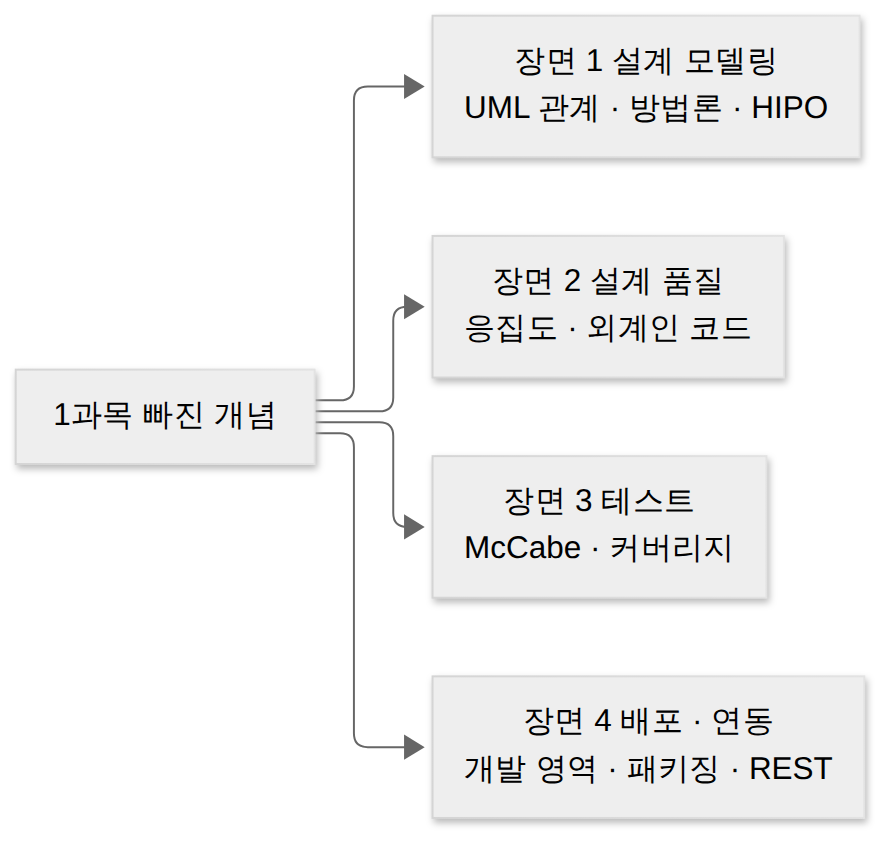
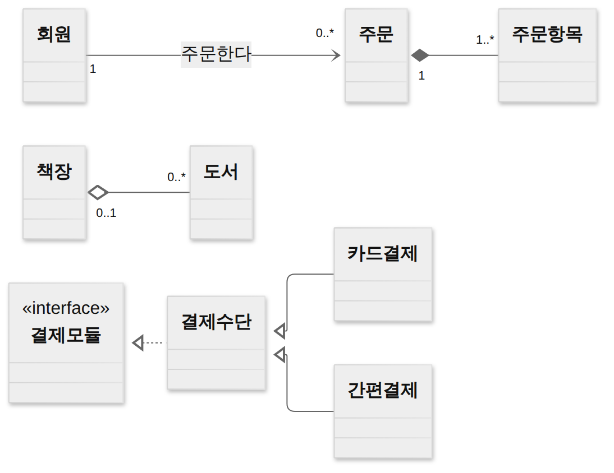

D039 · 1과목 빠진 개념 보충 — UML 관계·방법론·HIPO·응집도·McCabe·커버리지·패키징·REST
A 11/6 모의고사에서 “공부 안 한 게 나온다”는 말이 나왔던 문제들, 기억나세요? 1과목 페이지 서른 장을 다시 뒤져 보니 실제로 한 번도 설명하지 않았거나 이름만 스쳐 간 개념이 열한 묶음 있었어요. 오늘은 그 구멍을 메워요. 예시는 가상의 동네 책방 ‘모닥불 서점’의 온라인 주문 시스템 하나로 설계부터 배포까지 따라가요.
- UML 관계 6종(연관 · 집합 · 합성 · 일반화 · 의존 · 실체화)을 선 모양 · 머리 모양 · 생명주기로 구별하고, 분류화 · 집단화 · 일반화를 같은 사례에서 가를 수 있다
- 객체지향 분석 방법론 다섯(럼바우 · Booch · Jacobson · Coad-Yourdon · Wirfs-Brock)을 핵심 한 단어로 구별하고, HIPO의 세 도표와 “하향식”이라는 성격을 설명할 수 있다
- 응집도 일곱 칸 속에서 시간적 · 절차적 · 통신적 응집도를 구별하고, 외계인 코드와 스파게티 코드를 구별할 수 있다
- McCabe 순환 복잡도를 세 가지 방법으로 계산하고, 커버리지 여섯 종류를 강도 순으로 비교하며, 개발 영역 결정 요소 · 패키징 도구 고려사항 · REST를 설명할 수 있다
1부 (약 19분)
2부 (약 19분)
0. 기본 전제와 용어 사전
오늘은 단원이 여기저기서 모였기 때문에 앞 장면의 말이 뒤 장면에 그대로 나와요. 아래 용어는 이 페이지 전체에서 같은 뜻으로 써요. 특히 “생명주기”와 “제어 흐름 그래프”는 오늘 처음 제대로 정의하는 말이라 먼저 읽어 두세요.
| 용어 | 뜻 | 모닥불 서점 예 |
|---|---|---|
| 클래스 · 인스턴스 | 클래스는 같은 속성과 행동을 가진 객체의 틀, 인스턴스는 그 틀로 만든 실제 객체 하나 | 도서 클래스, ‘소년이 온다’ 한 권 |
| UML 관계 | 클래스 다이어그램에서 두 클래스 사이를 잇는 선. 선 모양이 관계 종류를 뜻함 | 회원 —— 주문 |
| 생명주기 | 객체가 만들어져서 사라질 때까지의 기간 | 주문이 취소되면 주문항목도 사라짐 |
| 인터페이스 | “이런 기능을 제공한다”는 약속만 있고 구현은 없는 틀 | 결제모듈(결제하기 · 취소하기) |
| 모듈 | 독립적으로 이름 붙여 다룰 수 있는 프로그램 단위(함수 · 클래스 · 파일) | 마감작업 모듈 |
| 제어 흐름 그래프 | 코드의 실행 지점을 노드(동그라미), 실행이 넘어가는 길을 간선(화살표)으로 그린 그림 | 그림 12 |
| 테스트 케이스(TC) | 입력값 하나와 그때 기대하는 결과의 묶음 | 재고 3 · 결제승인 참 → 출고 |
| URI · HTTP 메서드 | URI는 자원의 이름(주소), 메서드는 그 자원에 할 일(GET · POST · PUT · DELETE) | GET /books/42 |
1. 큰 그림 — 모의고사가 알려 준 구멍
지금까지 1과목은 공식 출제기준의 세부항목 순서대로 공부했어요. 그런데 교재와 기출은 출제기준 문장에 적히지 않은 용어도 자주 묻습니다. 예를 들어 출제기준은 “설계 모델링”이라고만 적지만, 시험은 “HIPO의 세 도표 중 틀린 것”이나 “UML 관계 중 채운 마름모”를 물어요. 11/6 모의고사의 HIPO · 집단화 · McCabe 세 문제가 바로 이런 틈에서 나왔어요.
그래서 오늘은 새 단원을 나가는 대신, 흩어진 구멍을 “소프트웨어 하나가 만들어지는 순서”로 다시 꿰었어요. 서점 시스템을 그림으로 그리고(장면 1), 코드를 모듈로 나눌 때 품질을 따지고(장면 2), 테스트로 얼마나 꼼꼼히 확인했는지 재고(장면 3), 마지막으로 범위를 정하고 포장해서 다른 시스템과 연결해 내보내요(장면 4). 구멍을 하나씩 메우는 게 아니라 길을 하나 깔고 그 위에 구멍을 올려놓는 셈이에요.

한 장 요약 — 오늘 열한 묶음과 각각의 핵심 한 줄이에요. 아래 장면에서 하나씩 문단으로 풀어요.
| 묶음 | 핵심 한 줄 | 장면 |
|---|---|---|
| UML 관계 6종 | 실선/점선, 마름모/삼각형/화살표로 관계 종류가 정해진다 | 1 |
| 분류화 · 집단화 · 일반화 | 물건→종류, 부분→전체, 좁은 종류→넓은 종류 | 1 |
| 객체지향 분석 방법론 | 럼바우=객체→동적→기능, Coad-Yourdon=E-R로 행위 | 1 |
| HIPO | 하향식 문서화 도구, 가시적 · 총체적 · 세부적 도표 | 1 |
| 응집도 7종 | 우연 < 논리 < 시간 < 절차 < 통신 < 순차 < 기능 | 2 |
| 외계인 · 스파게티 코드 | 출처를 모르는 코드 vs 흐름이 꼬인 코드 | 2 |
| McCabe 순환 복잡도 | E − N + 2 = 영역 수 = 갈림길 + 1 | 3 |
| 커버리지 6종 | 구문 < 결정 < 조건/결정 < 변형 조건/결정 < 다중 조건 | 3 |
| 개발 영역 결정 요소 | 기능 · 성능 · 제약 조건 · 인터페이스 · 신뢰도 | 4 |
| 패키징 도구 고려사항 | 보안 · 이기종 연동 · 사용자 편의 · 알고리즘 적합성 | 4 |
| REST | URI로 자원, HTTP 메서드로 할 일, 무상태 | 4 |
주문 · 주문항목 · 책장 · 도서 표가 미리 들어 있고, 상자마다 처음 상태에서 새로 시작해요. 실행 전에 상자 위 질문의 답을 먼저 예상해 보세요. UML 관계가 실제 DB 제약으로는 어떻게 바뀌는지 손으로 확인할 수 있어요.2. 장면 1 — 서점을 그림으로 옮기기 (UML 관계 · 추상화 · 방법론 · HIPO)
앞 섹션에서 오늘의 길을 깔았으니, 이제 첫 장면이에요. 모닥불 서점 사장님이 “온라인 주문을 받고 싶다”고 했을 때 개발자가 제일 먼저 하는 일은 코드를 짜는 게 아니라 등장인물(클래스)과 그 사이 관계를 그림으로 옮기는 일이에요. 이 장면에서는 그 그림의 문법(UML 관계), 그림을 그릴 때 머릿속에서 일어나는 묶기(추상화), 그림을 그리는 순서를 정한 방법론, 그리고 기능을 계층으로 정리하는 HIPO를 차례로 봐요.
UML 관계 여섯 가지 기출 10회
정의: UML 관계(relationship)는 클래스 다이어그램에서 두 클래스가 서로 어떻게 엮여 있는지를 나타내는 선이에요. 왜 필요하냐면, “주문과 주문항목은 관계가 있다”라는 말만으로는 주문을 지울 때 항목도 지워야 하는지, 잠깐 쓰는 사이인지 알 수 없기 때문이에요. UML은 이 차이를 선의 종류(실선 · 점선)와 끝 모양(마름모 · 삼각형 · 화살표)으로 구별해서, 그림만 보고도 구현 방법을 짐작할 수 있게 해요.
연관 관계(association)는 한 클래스가 다른 클래스를 계속 알고 지내는 관계예요. 실선으로 그리고, 한쪽만 안다면 아는 쪽에서 열린 화살표를 달아요. 선 양 끝에 다중성(1, 0..*, 1..* 처럼 몇 개와 연결되는지)을 적을 수 있어요. 서점에서 회원은 주문을 여러 개 가질 수 있고 주문은 회원 한 명에게 속하니 회원 "1" —— "0..*" 주문이에요. 연관은 연락처에 저장해 둔 친구 같아요. 오늘 연락을 안 해도 번호는 계속 갖고 있어요.
의존 관계(dependency)는 한 클래스가 다른 클래스를 잠깐 사용하는 관계예요. 점선에 열린 화살표로 그리고, 화살표는 쓰이는 쪽을 가리켜요. 보통 메서드의 매개변수나 지역 변수로 상대를 잠깐 받아 쓰고 끝나는 경우라, 상대 클래스가 바뀌면 영향을 받는다는 뜻 정도만 담아요. 서점의 주문처리는 배송 단계에서만 배송알림을 불러 문자를 보내고 잊어버려요. 연관이 연락처의 친구라면 의존은 길을 물어본 행인이에요. 그 순간엔 꼭 필요했지만 번호는 저장하지 않아요.
집합 관계(aggregation, 집약)는 전체와 부분의 관계이지만 부분이 전체와 따로 살 수 있는 관계예요. 실선에 속이 빈 마름모를 전체 쪽에 붙여요. 서점의 책장과 도서가 그래요. 책장을 철거해도 도서는 그대로 남아서 다른 책장에 꽂힐 수 있고, 도서는 애초에 책장과 따로 입고돼요. 즉 부분의 생명주기가 전체에 묶여 있지 않아요.
합성 관계(composition, 복합)는 전체와 부분이 생명주기를 함께하는 강한 전체–부분 관계예요. 실선에 속이 채워진 마름모를 전체 쪽에 붙여요. 서점의 주문과 주문항목이 그래요. “주문 1번의 두 번째 줄”은 주문 1번이 없으면 의미가 없으니, 주문이 취소되면 항목도 함께 사라지고, 항목 하나가 두 주문에 동시에 속하지도 않아요. 합성은 붕어빵과 팥소 같아요. 빵을 버리면 팥소만 따로 남지 않아요. 반대로 집합은 도시락통과 반찬이라, 통을 버려도 반찬은 다른 그릇에 옮겨 담으면 돼요.
일반화 관계(generalization)는 “~는 ~의 한 종류다(is-a)”라는 상속 관계예요. 실선에 속이 빈 삼각형을 부모(상위 클래스) 쪽에 붙여요. 서점의 카드결제와 간편결제는 둘 다 결제수단의 한 종류라, 결제수단이 가진 금액 · 결제일 같은 속성과 행동을 물려받아요. 실체화 관계(realization, 실현)는 인터페이스가 약속한 기능(오퍼레이션)을 클래스가 실제로 수행하도록 지정하는 관계, 즉 명세와 구현을 잇는 관계예요. 일반화와 같은 빈 삼각형을 쓰되 선이 점선이에요. 결제모듈 인터페이스가 “결제하기 · 취소하기”를 약속하면 결제수단이 그 약속을 지켜 구현하고, 카드결제 · 간편결제는 그 구현을 물려받아요. 물려받는 건 실선, 약속을 지키는 건 점선이라고 기억하면 둘이 섞이지 않아요.
합성과 집합의 차이는 그림으로만 보면 마름모 속 색깔 하나지만, 실제 DB에서는 외래 키의 삭제 규칙으로 드러나요. 합성은 ON DELETE CASCADE(전체가 지워지면 부분도 지움), 집합은 ON DELETE SET NULL(전체가 지워지면 부분은 남기고 연결만 끊음)로 옮기는 게 자연스러워요. 아래 두 상자로 직접 확인해 보세요.
주문 1번에 딸린 항목 세 줄(11 · 12 · 13)이 함께 사라지고 주문 2번의 항목 한 줄(21)만 남아요. 부분이 전체 없이는 존재하지 않는다는 합성의 뜻이 그대로 제약이 된 거예요.
도서 네 권은 하나도 사라지지 않고, 창가 책장에 있던 세 권(101 · 102 · 103)의 책장번호만 NULL이 돼요. 부분이 전체와 따로 산다는 집합의 뜻이에요.
집합에서는 부분이 “집을 옮길” 수도 있어요. 철거 후 남은 책을 계산대 옆 책장으로 옮겨 보세요. 합성의 주문항목을 다른 주문으로 옮기는 일은 보통 하지 않는다는 점과 비교해 보면 차이가 더 분명해져요.
2번 책장에 네 권이 모여요. 그리고 합성의 부분은 전체 없이 태어날 수도 없어요. 없는 주문(9번)에 항목을 붙이려 하면 DB가 거절해요. 일부러 오류가 나는 상자예요.
여섯 관계를 실전에서 가를 때는 순서대로 질문을 던지면 돼요. 실선인가 점선인가 → 머리가 삼각형인가 화살표인가 → 마름모가 있나 → 마름모 속이 찼나. 아래 애니메이션은 선 두 개를 이 질문으로 판별해요.
선 ① 주문처리 ┄┄> 배송알림
| 관계 | 선 | 머리 · 마름모 |
|---|---|---|
| 연관 | 실선 | 없음(또는 열린 화살표) |
| 집합 | 실선 | 빈 마름모 |
| 합성 | 실선 | 채운 마름모 |
| 일반화 | 실선 | 빈 삼각형 |
| 의존 | 점선 | 열린 화살표 |
| 실체화 | 점선 | 빈 삼각형 |
후보는 여섯 개예요. 선 하나를 보고 위에서부터 질문을 던져 지워 나가요.
선 ① 주문처리 ┄┄> 배송알림 — 점선이에요
| 관계 | 선 | 머리 · 마름모 |
|---|---|---|
| 연관 | 실선 | 없음(또는 열린 화살표) |
| 집합 | 실선 | 빈 마름모 |
| 합성 | 실선 | 채운 마름모 |
| 일반화 | 실선 | 빈 삼각형 |
| 의존 | 점선 | 열린 화살표 |
| 실체화 | 점선 | 빈 삼각형 |
첫 질문 “실선인가, 점선인가?” 점선이면 의존 아니면 실체화, 둘만 남아요.
선 ① 머리가 열린 화살표(속 빈 삼각형 아님)
| 관계 | 선 | 머리 · 마름모 |
|---|---|---|
| 연관 | 실선 | 없음(또는 열린 화살표) |
| 집합 | 실선 | 빈 마름모 |
| 합성 | 실선 | 채운 마름모 |
| 일반화 | 실선 | 빈 삼각형 |
| 의존 | 점선 | 열린 화살표 |
| 실체화 | 점선 | 빈 삼각형 |
두 번째 질문 “머리가 삼각형인가?” 열린 화살표라서 의존이에요. 주문처리가 배송 알림을 잠깐 불러 쓰는 사이예요.
선 ② 주문항목 ───◆ 주문 — 실선이에요
| 관계 | 선 | 머리 · 마름모 |
|---|---|---|
| 연관 | 실선 | 없음(또는 열린 화살표) |
| 집합 | 실선 | 빈 마름모 |
| 합성 | 실선 | 채운 마름모 |
| 일반화 | 실선 | 빈 삼각형 |
| 의존 | 점선 | 열린 화살표 |
| 실체화 | 점선 | 빈 삼각형 |
새 선이에요. 실선이라 점선 둘(의존 · 실체화)이 먼저 빠져요.
선 ② 끝에 마름모가 있어요
| 관계 | 선 | 머리 · 마름모 |
|---|---|---|
| 연관 | 실선 | 없음(또는 열린 화살표) |
| 집합 | 실선 | 빈 마름모 |
| 합성 | 실선 | 채운 마름모 |
| 일반화 | 실선 | 빈 삼각형 |
| 의존 | 점선 | 열린 화살표 |
| 실체화 | 점선 | 빈 삼각형 |
세 번째 질문 “마름모가 있나?” 마름모는 전체–부분이라는 뜻이라 집합과 합성만 남아요.
선 ② 마름모 속이 채워져 있어요
| 관계 | 선 | 머리 · 마름모 |
|---|---|---|
| 연관 | 실선 | 없음(또는 열린 화살표) |
| 집합 | 실선 | 빈 마름모 |
| 합성 | 실선 | 채운 마름모 |
| 일반화 | 실선 | 빈 삼각형 |
| 의존 | 점선 | 열린 화살표 |
| 실체화 | 점선 | 빈 삼각형 |
마지막 질문 “속이 찼나?” 채운 마름모라서 합성이에요. 주문이 사라지면 주문항목도 함께 사라진다는 뜻이에요.
한 장 요약 — 여섯 관계를 선 · 끝 모양 · 생명주기로 정리했어요.
| 관계 | 모양 | 뜻 · 서점 예 |
|---|---|---|
| 연관 | 실선(+열린 화살표, 다중성) | 계속 아는 사이 · 회원—주문 |
| 의존 | 점선 + 열린 화살표 | 잠깐 쓰는 사이 · 주문처리 ┄> 배송알림 |
| 집합 | 실선 + 빈 마름모(전체 쪽) | 부분이 따로 삶 · 책장◇도서 |
| 합성 | 실선 + 채운 마름모(전체 쪽) | 생명주기 함께 · 주문◆주문항목 |
| 일반화 | 실선 + 빈 삼각형(부모 쪽) | is-a 상속 · 카드결제→결제수단 |
| 실체화 | 점선 + 빈 삼각형(인터페이스 쪽) | 약속 구현 · 결제수단┄▷결제모듈 |
이제 서점 전체를 한 장에 그려 보면 아래와 같아요. 관계 다섯 종류가 한 그림에 다 들어 있으니, 선마다 “이건 무슨 관계지?”를 스스로 말해 보세요.

분류화 · 집단화 · 일반화 — 묶는 방향 세 가지
정의: 객체지향에서 추상화는 복잡한 대상을 필요한 성질만 남기고 묶어서 보는 일이에요. 그 묶는 방법이 세 가지라서 이름이 셋이에요. 분류화(classification)는 실제 물건(인스턴스) 여럿을 공통점으로 묶어 하나의 클래스로 보는 것으로, 관계 이름은 is-instance-of예요. ‘소년이 온다’ 한 권과 ‘흰’ 한 권은 둘 다 도서의 인스턴스예요.
집단화(aggregation)는 여러 부분을 모아 하나의 전체로 보는 것으로, 관계 이름은 is-part-of(is-a-part-of)예요. 주문항목 여러 줄이 모여 주문 하나가 돼요. 앞에서 본 UML의 집합 · 합성 관계가 바로 이 집단화를 그림으로 그린 거예요. 일반화(generalization)는 비슷한 클래스들의 공통점을 뽑아 더 넓은 상위 클래스로 묶는 것으로, 관계 이름은 is-a예요. 도서와 음반은 둘 다 상품이에요. UML 일반화 관계(실선 빈 삼각형)가 이걸 그린 거고, 반대 방향으로 상위 클래스를 좁혀 가는 것을 특수화라고 불러요.
세 개 모두 말로는 “~이다”라서 헷갈려요. 사과로 치면 “이건 사과야”(이 한 알이 사과라는 종류의 인스턴스 — 분류화), “이 사과는 과일 바구니의 일부야”(집단화), “사과는 과일이야”(일반화)예요. 똑같이 “~이다”라고 말해도 아래 칸에 무엇이 있는지 보면 방향이 갈려요.
| 가르는 질문 | 예라면 | 서점 예 |
|---|---|---|
| 아래 칸이 실제 물건 하나인가? | 분류화 (is-instance-of) | ‘소년이 온다’ 한 권 → 도서 |
| 아래 칸이 전체의 조각인가? | 집단화 (is-part-of) | 주문항목 → 주문 |
| 아래 칸이 더 좁은 종류인가? | 일반화 (is-a) | 도서 · 음반 → 상품 |
객체지향 분석 방법론 다섯 가지 기출 18회
정의: 객체지향 분석 방법론은 “요구사항에서 어떤 순서로 무엇을 찾아 어떤 그림을 산출하나”를 정해 둔 분석 절차예요. 1980~90년대에 객체지향이 퍼지자 연구자마다 자기 방식으로 분석 절차를 내놓았고, 그중 럼바우 · Booch · Jacobson의 방법이 합쳐져 지금의 UML이 됐어요. 그래서 시험은 각 방법론의 대표 키워드를 섞어 놓고 짝을 맞히게 해요. 같은 서점을 다섯 분석가에게 맡겼다고 생각하며 하나씩 봐요.
럼바우(Rumbaugh)의 OMT(Object Modeling Technique)는 시스템을 세 가지 관점으로 나눠 차례로 모델링해요. 먼저 객체 모델링으로 어떤 객체가 있고 서로 어떻게 연결되는지(정적 구조)를 객체 다이어그램으로 그리고, 다음 동적 모델링으로 시간이 흐르며 사건에 따라 객체 상태가 어떻게 바뀌는지를 상태 다이어그램으로, 마지막 기능 모델링으로 입력이 어떤 처리를 거쳐 출력이 되는지를 자료 흐름도(DFD)로 그려요. 서점이라면 도서 · 주문 · 회원을 먼저 그리고, 주문이 ‘접수 → 결제 완료 → 배송 중’으로 바뀌는 상태를 그린 뒤, 장바구니가 주문서로 바뀌는 흐름을 그리는 식이에요. 럼바우는 지도 · 시계 · 공정표 세 장을 순서대로 펼치는 분석가예요.
Booch(부치) 방법은 분석보다 설계 쪽에 무게를 두며, 전체 개발 일정 같은 큰 흐름(거시적 개발 프로세스)과 클래스 · 객체를 찾아 정의하는 작은 반복(미시적 개발 프로세스)을 함께 써요. 클래스 다이어그램 · 객체 다이어그램 · 상태 전이 다이어그램 등으로 클래스와 객체를 식별하고 분석해요. 시험에서는 “미시적 · 거시적 개발 프로세스를 모두 사용”이라는 말이 나오면 Booch예요.
Jacobson(야콥슨)의 OOSE(Object-Oriented Software Engineering)는 유스케이스를 중심에 놓아요. “고객이 책을 주문한다”, “사장님이 재고를 등록한다”처럼 사용자가 시스템으로 하고 싶은 일을 먼저 적고, 그 유스케이스를 따라 분석 · 설계 · 테스트를 이어 가요. 오늘날 UML의 유스케이스 다이어그램이 여기서 왔어요. 서점 분석가 중 “손님이 뭘 하고 싶어 하세요?”부터 묻는 인터뷰어가 Jacobson이에요.
Coad-Yourdon(코드-요던) 방법은 E-R 다이어그램을 써서 객체의 행위를 데이터 모델링 쪽에서 접근해요. 분석 과정은 객체와 클래스 찾기 → 구조(일반화 · 전체–부분) 찾기 → 주제(subject) 정하기 → 속성 정의 → 서비스(연산) 정의 순서예요. DB 설계에 익숙한 사람에게 친숙한 방식이라, 서점이라면 도서 · 주문 엔터티와 관계를 먼저 잡고 거기에 행동을 붙여요. Wirfs-Brock(워프스-브록) 방법은 분석과 설계를 따로 나누지 않고, 고객 명세서를 보며 “이 일은 누구의 책임인가”를 중심으로 클래스 · 책임 · 협력을 찾는 책임 중심 방식이에요. 서점에서 “재고 확인은 주문의 책임인가, 도서의 책임인가?”를 따지는 반장 같은 분석가예요.
한 장 요약 — 다섯 방법론을 가르는 질문이에요. 출제자는 이름만 바꿔 놓고 설명을 섞어 주는 걸 좋아해요. 설명 속 키워드 한 단어만 잡으면 이름이 정해져요.
| 설명에 이런 말이 있으면 | 방법론 | 대표 산출물 · 특징 |
|---|---|---|
| 객체 → 동적 → 기능 순서, 세 모델 | 럼바우(OMT) | 객체 다이어그램 · 상태 다이어그램 · DFD |
| 미시적 · 거시적 개발 프로세스 | Booch | 클래스 · 객체 식별, 설계 중심 |
| 유스케이스 중심 | Jacobson(OOSE) | 유스케이스로 분석 · 설계 · 테스트를 이음 |
| E-R 다이어그램으로 객체 행위 | Coad-Yourdon | 객체 · 구조 · 주제 · 속성 · 서비스 |
| 책임 · 협력, 분석과 설계 구분 없음 | Wirfs-Brock | 클래스 · 책임 · 협력 |
HIPO — 기능을 계층으로 문서화하기 기출 15회
정의: HIPO(Hierarchy plus Input-Process-Output)는 시스템의 기능을 위에서 아래로 계층(Hierarchy)으로 쪼개고, 각 기능의 입력 · 처리 · 출력(Input-Process-Output)을 도표로 적는 하향식 설계 · 문서화 도구예요. 1970년대 IBM에서 만든 기법인데, 당시 프로그램 문서가 코드와 따로 놀아서 유지보수할 때 “이 모듈이 뭘 받고 뭘 내놓는지”를 알 수 없던 문제를 풀려고 나왔어요.
HIPO는 세 종류의 도표로 이뤄져요. 가시적 도표(Visual Table of Contents)는 시스템 전체 기능을 나무 모양 계층으로 보여 주는 목차예요. 총체적 도표(Overview Diagram, 개요 도표)는 그 목차의 기능 하나마다 입력 · 처리 · 출력을 한눈에 보여 줘요. 세부적 도표(Detail Diagram, 상세 도표)는 총체적 도표의 처리를 더 자세히, 어떤 자료를 어떤 단계로 쓰는지까지 적어요. 건물로 치면 로비의 층별 안내판(가시적), 층 하나의 배치도(총체적), 사무실 상세 도면(세부적)이에요.
HIPO의 장점은 보기 쉽고 이해하기 쉽다는 것, 그리고 기능과 자료의 의존 관계를 함께 보여 줘서 문서만 보고도 유지보수할 곳을 찾기 쉽다는 거예요. 대가는 도표를 계속 코드와 맞춰 고쳐야 한다는 점이에요. 안내판은 위층부터 아래로 읽게 되어 있는데, HIPO를 “상향식”이라고 쓰는 건 건물을 지붕부터 짓겠다는 말과 같아요.
→ 이 장면의 결과물: 서점 클래스 다이어그램(관계 다섯 종류), 분석 절차(방법론), 기능 계층 문서(HIPO). 그림이 생겼으니 그래서 다음 장면은 이 그림을 실제 모듈로 나눌 때 “잘 나눴나”를 따지는 일이에요.
3. 장면 2 — 모듈 정리하기 (응집도 일곱 칸 · 외계인 코드) 기출 16회
장면 1에서 서점의 그림을 그렸으니 이제 코드로 옮겨 모듈을 나눌 차례예요. 모듈을 나눌 때 두 가지를 따져요. 모듈끼리 얼마나 덜 엮였나(결합도, D012에서 배움)와 모듈 안이 얼마나 한 목적으로 뭉쳤나(응집도)예요. 결합도는 지난번에 일곱 칸을 다 봤지만 응집도는 몇 칸이 비어 있었어요. 오늘 그 칸을 채워 줄을 완성해요.
정의: 응집도(cohesion)는 한 모듈 안의 구성 요소들이 서로 얼마나 관련되어 하나의 기능을 위해 모여 있는지의 정도예요. 응집도가 높을수록 모듈이 한 가지 일만 해서 고치기 쉽고 재사용하기 좋아요. 강한 것부터 기능적 > 순차적 > 통신적 > 절차적 > 시간적 > 논리적 > 우연적의 일곱 칸이에요. 이미 배운 기능적 · 순차적 · 절차적 · 논리적 · 우연적 사이에 오늘 통신적과 시간적을 꽂으면 돼요.
시간적 응집도(temporal cohesion)는 서로 관련 없는 일들이 “같은 시점에 실행된다”는 이유 하나로 한 모듈에 모인 경우예요. 프로그램 시작 시 초기화 모음이나 종료 직전 정리 모음이 대표적이에요. 서점의 ‘마감작업’ 모듈은 매일 밤 11시에 재고 집계 · 오래된 로그 삭제 · 사장님께 알림 메일 보내기를 한꺼번에 해요. 세 일은 서로 자료를 주고받지도 않고 순서도 상관없어요. 퇴근 5분 전에 몰아서 하는 청소 · 정산 · 전화 같은 모듈이에요.
절차적 응집도(procedural cohesion)는 요소들이 “정해진 순서대로 실행된다”는 이유로 모인 경우예요. 시간적보다 한 칸 강한 이유는 순서라는 약속이 하나 더 있기 때문이에요. 서점의 ‘주문서 처리’는 재고 확인 → 결제 → 배송 지시를 반드시 이 순서로 해요. 다만 앞 단계의 출력이 뒤 단계의 입력으로 넘어가는 건 아니라서 순차적은 아니에요. 요리 순서표처럼 “이다음엔 이거”만 정해져 있어요.
통신적 응집도(communicational cohesion, 교환적 응집도)는 요소들이 “같은 입력 자료를 쓰거나 같은 출력 자료를 만든다”는 이유로 모인 경우예요. 서점의 ‘회원 정보 갱신’ 모듈은 회원 레코드 한 줄을 받아 주소도 고치고 전화번호도 고치고 등급도 다시 계산해요. 세 일의 순서는 상관없지만 같은 장부를 펼쳐 놓고 일한다는 공통점이 있어요. 같은 장부를 보는 사람들이라 대화(통신)가 생기는 사이라고 이름을 기억하면 돼요.
나머지 네 칸은 다시 짚기만 할게요. 순차적은 앞 요소의 출력이 그대로 뒤 요소의 입력이 되는 경우(항목 합계 → 할인 계산), 기능적은 모든 요소가 단 하나의 기능을 위해 있는 경우(할인액 계산 하나만), 논리적은 비슷한 종류의 일을 모아 두고 그중 하나를 골라 실행하는 경우(바코드 · 키보드 · 카드 리더 입력 처리), 우연적은 아무 관련 없이 모인 경우(그냥 utils 파일)예요. 아래 애니메이션으로 서점 모듈 일곱 개를 칸에 넣어 보세요.
| 강도 | 응집도 | 서점 모듈 |
|---|---|---|
| 7 | 기능적 | … |
| 6 | 순차적 | … |
| 5 | 통신적 | … |
| 4 | 절차적 | … |
| 3 | 시간적 | 마감작업(23시 재고 집계 · 로그 삭제 · 알림 메일) |
| 2 | 논리적 | … |
| 1 | 우연적 | … |
마감작업은 서로 상관없는 일 셋이 “밤 11시”라는 시점 하나로 묶였어요 — 시간적 응집도.
| 강도 | 응집도 | 서점 모듈 |
|---|---|---|
| 7 | 기능적 | … |
| 6 | 순차적 | … |
| 5 | 통신적 | … |
| 4 | 절차적 | 주문서 처리(재고 확인 → 결제 → 배송 지시) |
| 3 | 시간적 | 마감작업(23시 재고 집계 · 로그 삭제 · 알림 메일) |
| 2 | 논리적 | … |
| 1 | 우연적 | … |
주문서 처리는 재고 확인 → 결제 → 배송 지시라는 순서로 묶였지만, 앞 단계의 출력을 뒤가 입력으로 받지는 않아요 — 절차적.
| 강도 | 응집도 | 서점 모듈 |
|---|---|---|
| 7 | 기능적 | … |
| 6 | 순차적 | … |
| 5 | 통신적 | 회원 정보 갱신(같은 회원 레코드로 주소 · 전화 · 등급 수정) |
| 4 | 절차적 | 주문서 처리(재고 확인 → 결제 → 배송 지시) |
| 3 | 시간적 | 마감작업(23시 재고 집계 · 로그 삭제 · 알림 메일) |
| 2 | 논리적 | … |
| 1 | 우연적 | … |
회원 정보 갱신은 같은 회원 레코드 하나를 놓고 여러 일을 해요. 공유하는 자료가 묶는 이유 — 통신적.
| 강도 | 응집도 | 서점 모듈 |
|---|---|---|
| 7 | 기능적 | … |
| 6 | 순차적 | 주문 총액(항목 합계 → 할인 입력) |
| 5 | 통신적 | 회원 정보 갱신(같은 회원 레코드로 주소 · 전화 · 등급 수정) |
| 4 | 절차적 | 주문서 처리(재고 확인 → 결제 → 배송 지시) |
| 3 | 시간적 | 마감작업(23시 재고 집계 · 로그 삭제 · 알림 메일) |
| 2 | 논리적 | … |
| 1 | 우연적 | … |
주문 총액은 항목 합계(출력)가 곧바로 할인 계산의 입력이 돼요 — 순차적.
| 강도 | 응집도 | 서점 모듈 |
|---|---|---|
| 7 | 기능적 | 할인액 계산 하나만 |
| 6 | 순차적 | 주문 총액(항목 합계 → 할인 입력) |
| 5 | 통신적 | 회원 정보 갱신(같은 회원 레코드로 주소 · 전화 · 등급 수정) |
| 4 | 절차적 | 주문서 처리(재고 확인 → 결제 → 배송 지시) |
| 3 | 시간적 | 마감작업(23시 재고 집계 · 로그 삭제 · 알림 메일) |
| 2 | 논리적 | … |
| 1 | 우연적 | … |
할인액 계산은 한 가지 일만 해요. 가장 강한 칸 — 기능적.
| 강도 | 응집도 | 서점 모듈 |
|---|---|---|
| 7 | 기능적 | 할인액 계산 하나만 |
| 6 | 순차적 | 주문 총액(항목 합계 → 할인 입력) |
| 5 | 통신적 | 회원 정보 갱신(같은 회원 레코드로 주소 · 전화 · 등급 수정) |
| 4 | 절차적 | 주문서 처리(재고 확인 → 결제 → 배송 지시) |
| 3 | 시간적 | 마감작업(23시 재고 집계 · 로그 삭제 · 알림 메일) |
| 2 | 논리적 | 입력 처리(바코드 · 키보드 · 카드 리더 중 골라 실행) |
| 1 | 우연적 | … |
입력 처리는 “입력이라는 같은 종류”라서 모였고, 매번 그중 하나만 골라 실행해요 — 논리적.
| 강도 | 응집도 | 서점 모듈 |
|---|---|---|
| 7 | 기능적 | 할인액 계산 하나만 |
| 6 | 순차적 | 주문 총액(항목 합계 → 할인 입력) |
| 5 | 통신적 | 회원 정보 갱신(같은 회원 레코드로 주소 · 전화 · 등급 수정) |
| 4 | 절차적 | 주문서 처리(재고 확인 → 결제 → 배송 지시) |
| 3 | 시간적 | 마감작업(23시 재고 집계 · 로그 삭제 · 알림 메일) |
| 2 | 논리적 | 입력 처리(바코드 · 키보드 · 카드 리더 중 골라 실행) |
| 1 | 우연적 | 유틸 모음(날짜 변환 · 로고 출력 · 환율) |
유틸 모음은 그냥 같은 파일에 있었을 뿐이에요. 가장 약한 칸 — 우연적. 일곱 칸이 다 찼어요.
헷갈릴 때는 강한 칸부터 질문을 내려가요. 앞 결과가 뒤 입력인가(순차) → 같은 자료를 함께 쓰나(통신) → 실행 순서가 정해졌나(절차) → 실행 시점만 같은가(시간). 위에서 “예”가 나오는 첫 칸이 답이에요.
한 장 요약 — 일곱 칸의 묶는 이유와 서점 예예요.
| 응집도 (강 → 약) | 묶는 이유 | 서점 예 |
|---|---|---|
| 기능적 | 하나의 기능만 수행 | 할인액 계산 |
| 순차적 | 앞의 출력 = 뒤의 입력 | 항목 합계 → 할인 |
| 통신적(교환적) | 같은 입력 · 출력 자료를 공유 | 회원 레코드 하나로 여러 수정 |
| 절차적 | 정해진 실행 순서 | 재고 확인 → 결제 → 배송 |
| 시간적 | 같은 시점에 실행 | 밤 11시 마감작업 |
| 논리적 | 비슷한 종류라서, 하나를 골라 실행 | 입력 장치별 처리 |
| 우연적 | 관련 없음 | utils 모음 |
외계인 코드와 스파게티 코드
모듈을 잘 나눴어도 오래된 코드가 섞이면 품질이 무너져요. 그래서 시험은 나쁜 코드의 이름 두 개를 꼭 구별하게 해요. 아래 두 정의는 기출 선지와 교재 일반 설명을 기준으로 정리했어요.
외계인 코드(alien code)는 아주 오래되었거나 참고 문서 · 개발자가 남아 있지 않아서 무엇을 왜 하는지 알 수 없고, 그래서 유지보수가 매우 어려운 프로그램 코드예요. 서점에서 3년 전 퇴사한 개발자가 문서 없이 남긴 배송비 계산 모듈이 그래요. 돌아가긴 하는데 아무도 손대지 못해요. 이걸 막는 방법은 문서화와 주석, 그리고 코드 리뷰로 “나만 아는 코드”를 만들지 않는 거예요. 외계인 코드는 발굴된 유적과 같아요. 누가 왜 만들었는지 모르니 함부로 옮기지도 못해요.
스파게티 코드(spaghetti code)는 goto문이나 깊은 중첩 if, 여기저기 튀는 흐름 때문에 제어 흐름이 국수처럼 얽혀서 따라 읽기 힘든 코드예요. 작성자가 아직 있어도 읽기 어렵다는 게 외계인 코드와 다른 점이에요. 서점의 쿠폰 적용 함수가 조건문 다섯 겹에 중간 return이 열 개라면 스파게티예요. 스파게티는 구조 문제라 리팩토링(D027)으로 풀 수 있고, 외계인 코드는 출처 문제라 문서부터 되살려야 해요.
→ 이 장면의 결과물: 서점 모듈 일곱 개의 응집도 판정과 나쁜 코드 두 유형의 구별. 모듈이 생겼으니 그래서 다음 장면은 이 모듈을 “얼마나 꼼꼼하게 시험했나”를 숫자로 재는 일이에요.
4. 장면 3 — 얼마나 꼼꼼히 시험했나 (McCabe 순환 복잡도 · 커버리지)
장면 2에서 모듈을 나눴으니 이제 테스트예요. 화이트박스 테스트(D025)는 코드 내부를 보면서 테스트 케이스를 만드는 방법이었죠. 그런데 “내부를 본다”는 말만으로는 몇 개를 만들어야 충분한지 알 수 없어요. 그 숫자를 주는 도구가 McCabe의 순환 복잡도와 커버리지 기준이에요.
McCabe 순환 복잡도 기출 10회
정의: 순환 복잡도(cyclomatic complexity)는 프로그램의 제어 흐름 그래프에서 서로 독립적인 실행 경로가 몇 개인지를 나타내는 수치예요. 1976년 Thomas McCabe가 제안해서 McCabe 복잡도라고도 불러요. 왜 필요하냐면, 코드 줄 수로는 “얼마나 갈래가 많은지”를 알 수 없기 때문이에요. 100줄짜리 직선 코드는 길이 하나지만 20줄짜리 코드라도 if가 다섯 개면 길이 여섯 개예요. 이 수치는 기초 경로 테스트(D025)에서 만들어야 할 최소 테스트 케이스 수와도 같아요.
계산 방법은 세 가지이고, 그래프가 한 덩어리로 이어져 있으면 모두 같은 값을 내요. 첫째, 공식 V(G) = E − N + 2(E는 간선 수, N은 노드 수, 그래프 조각이 P개면 E − N + 2P). 둘째, 그래프를 종이에 평면으로 그렸을 때 선으로 둘러싸인 영역 수(바깥 영역 포함). 셋째, 나가는 화살표가 둘인 갈림길(조건 판단) 수 + 1. 고속도로로 치면 처음부터 있는 직진 길 하나에 분기 표지판 하나마다 새 길이 하나씩 생기는 거예요.
서점의 출고 모듈을 제어 흐름 그래프로 그리면 아래처럼 노드 8개 · 간선 11개가 돼요. 2번은 재고 판단, 3번 · 4번은 결제 방식 판단, 7번은 “다음 주문이 있나” 반복 판단이에요.
② 간선 E를 센다(휘어진 화살표 포함)
③ V(G) = E − N + 2
④ 확인: 영역 수(바깥 포함) 또는 갈림길 수 + 1과 같은지 본다
| 방법 | 세는 것 | 값 |
|---|---|---|
| 노드 N | 동그라미 수 | 8 |
| 간선 E | 화살표 수 | … |
| 공식 | E − N + 2 | … |
| 영역 | 닫힌 면 + 바깥 | … |
| 갈림길 | 분기 노드 + 1 | … |
먼저 노드(처리 · 판단 지점)를 세요. 1부터 8까지 8개예요.
| 방법 | 세는 것 | 값 |
|---|---|---|
| 노드 N | 동그라미 수 | 8 |
| 간선 E | 화살표 수 | 11 |
| 공식 | E − N + 2 | … |
| 영역 | 닫힌 면 + 바깥 | … |
| 갈림길 | 분기 노드 + 1 | … |
이번엔 화살표(제어가 넘어가는 길)를 세요. 곧은 화살표 9개 + 휘어진 화살표 2개 = 11개예요.
| 방법 | 세는 것 | 값 |
|---|---|---|
| 노드 N | 동그라미 수 | 8 |
| 간선 E | 화살표 수 | 11 |
| 공식 | E − N + 2 | 11 − 8 + 2 = 5 |
| 영역 | 닫힌 면 + 바깥 | … |
| 갈림길 | 분기 노드 + 1 | … |
V(G) = E − N + 2 = 11 − 8 + 2 = 5. 여기서 “+1”로 끝내면 4가 나와요 — 지난 모의고사에서 실제로 걸린 함정이에요.
| 방법 | 세는 것 | 값 |
|---|---|---|
| 노드 N | 동그라미 수 | 8 |
| 간선 E | 화살표 수 | 11 |
| 공식 | E − N + 2 | 11 − 8 + 2 = 5 |
| 영역 | 닫힌 면 + 바깥 | 5 |
| 갈림길 | 분기 노드 + 1 | … |
선으로 둘러싸인 면 R1~R4에 바깥 R5까지 세면 5개. 그림만 주는 문제는 이 방법이 빨라요.
| 방법 | 세는 것 | 값 |
|---|---|---|
| 노드 N | 동그라미 수 | 8 |
| 간선 E | 화살표 수 | 11 |
| 공식 | E − N + 2 | 11 − 8 + 2 = 5 |
| 영역 | 닫힌 면 + 바깥 | 5 |
| 갈림길 | 분기 노드 + 1 | 4 + 1 = 5 |
나가는 화살표가 두 개인 노드(2 · 3 · 4 · 7)가 4개 → 4 + 1 = 5. 세 방법이 같은 답이에요.
값이 크면 무엇을 뜻할까요? 독립된 길이 많을수록 테스트 케이스도 많이 필요하고, 사람이 머릿속으로 따라가기도 어려워져요. 현업에서는 흔히 10을 넘으면 함수를 쪼개라는 경고로 쓰는데, 이건 McCabe가 제안한 경험적 기준일 뿐 시험에 나오는 공식은 아니에요. 정적 분석 도구(SonarQube 등)가 함수마다 이 숫자를 보여 주는 이유예요.
커버리지 — 테스트가 밟아 본 범위 기출 16회
정의: 커버리지(coverage, 검증 기준)는 테스트 케이스 묶음이 코드의 문장 · 분기 · 조건을 얼마나 실행해 봤는지를 정하는 기준이에요. “테스트 다 했어요”라는 말이 사람마다 뜻이 다르니, 무엇을 몇 번 밟아야 “다 했다”인지를 정해 둔 거예요. 아래 서점 코드 한 조각에 여섯 기준을 차례로 적용해 볼게요. 조건 두 개가 &&로 묶인 결정 하나가 있어요.
if (재고 > 0 && 결제승인) {
출고();
}
기록();구문 커버리지(statement coverage, 문장 커버리지)는 코드의 모든 문장을 적어도 한 번 실행하는 기준이에요. 위 코드는 (재고 3, 결제승인 참) 케이스 하나면 출고()와 기록()이 다 실행돼서 충족돼요. 가장 약한 기준이라 “조건이 거짓이면 어떻게 되나”는 전혀 확인하지 못해요. 결정 커버리지(decision coverage, 분기 커버리지)는 모든 결정(if 전체의 판단)이 참과 거짓을 각각 한 번 이상 갖게 하는 기준이에요. 결정이 거짓이 되는 케이스를 하나 더해 두 개면 충족돼요. 국내 시험은 결정 커버리지와 분기 커버리지를 같은 말로 써요.
조건 커버리지(condition coverage)는 결정 안의 개별 조건(재고 > 0, 결제승인) 하나하나가 참과 거짓을 각각 한 번 이상 갖게 하는 기준이에요. 여기서 함정이 생겨요. (재고 참, 결제 거짓)과 (재고 거짓, 결제 참) 두 개로 조건 커버리지는 채워지지만 두 경우 모두 결정은 거짓이라, 출고()는 한 번도 실행되지 않아요. 그래서 조건 커버리지는 결정 커버리지를 보장하지 않아요. 각 조건의 표지판 글자는 다 읽어 봤는데 정작 갈림길의 한쪽 길은 가 보지 않은 셈이에요.
이 틈을 메운 게 조건/결정 커버리지(condition/decision coverage)예요. 개별 조건도 참 · 거짓을 다 갖고, 결정 전체도 참 · 거짓을 다 갖게 하는 기준으로, (참, 참)과 (거짓, 거짓) 두 개면 돼요. 변형 조건/결정 커버리지(MC/DC, Modified Condition/Decision Coverage)는 여기에 더해 “각 조건이 다른 조건과 상관없이 혼자서 결정 결과를 바꿀 수 있음”을 보여 주는 케이스 짝을 요구해요. 보통 조건이 n개면 n + 1개 케이스로 충족되며, 항공기 소프트웨어처럼 안전이 중요한 분야에서 요구하는 기준이에요. 다중 조건 커버리지(multiple condition coverage)는 조건들의 참 · 거짓 모든 조합(조건 n개면 2ⁿ개)을 다 시험하는 가장 강한 기준이에요.
| TC | 재고 > 0 | 결제승인 | 결정 |
|---|---|---|---|
| TC1 | 참 | 참 | 참 |
| 기준 | 만족? |
|---|---|
| 구문 | ✅ |
| 결정(분기) | ❌ |
| 조건 | ❌ |
| 조건/결정 | ❌ |
| 변형 조건/결정 | ❌ |
| 다중 조건 | ❌ |
구문: 케이스 하나(둘 다 참)로 출고()와 기록()이 모두 한 번씩 실행돼요. 하지만 결정이 “거짓”인 길은 한 번도 안 갔어요.
| TC | 재고 > 0 | 결제승인 | 결정 |
|---|---|---|---|
| TC1 | 참 | 참 | 참 |
| TC2 | 거짓 | 참 | 거짓 |
| 기준 | 만족? |
|---|---|
| 구문 | ✅ |
| 결정(분기) | ✅ |
| 조건 | ❌ |
| 조건/결정 | ❌ |
| 변형 조건/결정 | ❌ |
| 다중 조건 | ❌ |
결정(분기): 결정이 거짓이 되는 TC2를 더하니 참 · 거짓 길을 다 가 봤어요. 그런데 결제승인은 늘 참이라 “결제승인 = 거짓”은 시험되지 않았어요.
| TC | 재고 > 0 | 결제승인 | 결정 |
|---|---|---|---|
| TC1 | 참 | 거짓 | 거짓 |
| TC2 | 거짓 | 참 | 거짓 |
| 기준 | 만족? |
|---|---|
| 구문 | ❌ |
| 결정(분기) | ❌ |
| 조건 | ✅ |
| 조건/결정 | ❌ |
| 변형 조건/결정 | ❌ |
| 다중 조건 | ❌ |
조건만 노린 다른 묶음: 각 조건이 참 · 거짓을 한 번씩 가졌어요(조건 ✅). 그런데 결정은 둘 다 거짓! 출고()가 한 번도 안 돌아 구문도 결정도 ❌ — 조건 커버리지가 결정 커버리지를 보장하지 않는 장면이에요.
| TC | 재고 > 0 | 결제승인 | 결정 |
|---|---|---|---|
| TC1 | 참 | 참 | 참 |
| TC2 | 거짓 | 거짓 | 거짓 |
| 기준 | 만족? |
|---|---|
| 구문 | ✅ |
| 결정(분기) | ✅ |
| 조건 | ✅ |
| 조건/결정 | ✅ |
| 변형 조건/결정 | ❌ |
| 다중 조건 | ❌ |
조건/결정: (참, 참)과 (거짓, 거짓) 두 개로 각 조건도 참 · 거짓, 결정도 참 · 거짓을 모두 가졌어요.
| TC | 재고 > 0 | 결제승인 | 결정 |
|---|---|---|---|
| TC1 | 참 | 참 | 참 |
| TC2 | 거짓 | 참 | 거짓 |
| TC3 | 참 | 거짓 | 거짓 |
| 기준 | 만족? |
|---|---|
| 구문 | ✅ |
| 결정(분기) | ✅ |
| 조건 | ✅ |
| 조건/결정 | ✅ |
| 변형 조건/결정 | ✅ |
| 다중 조건 | ❌ |
변형 조건/결정: TC1↔TC2는 재고만 바꿔서 결과가 바뀌고, TC1↔TC3은 결제승인만 바꿔서 결과가 바뀌어요. 조건마다 “혼자서 결과를 뒤집는” 짝이 있으니 3개(조건 2 + 1)로 충족.
| TC | 재고 > 0 | 결제승인 | 결정 |
|---|---|---|---|
| TC1 | 참 | 참 | 참 |
| TC2 | 거짓 | 참 | 거짓 |
| TC3 | 참 | 거짓 | 거짓 |
| TC4 | 거짓 | 거짓 | 거짓 |
| 기준 | 만족? |
|---|---|
| 구문 | ✅ |
| 결정(분기) | ✅ |
| 조건 | ✅ |
| 조건/결정 | ✅ |
| 변형 조건/결정 | ✅ |
| 다중 조건 | ✅ |
다중 조건: 참 · 거짓의 모든 조합 2² = 4개. 조건이 n개면 2ⁿ개라 조건이 10개면 1024개 — 가장 꼼꼼하고 가장 비싸요.
여섯 기준을 강도 순으로 세우면 아래와 같아요. 오른쪽으로 갈수록 꼼꼼하지만 테스트 케이스 수, 곧 비용이 늘어요. 조건 커버리지만 따로 표시한 건 결정 커버리지를 포함하지 못해서 한 줄로 세울 수 없기 때문이에요.
| 커버리지 | 기준 | 위 코드 최소 TC |
|---|---|---|
| 구문(문장) | 모든 문장 1번 이상 실행 | 1 |
| 결정(분기) | 결정마다 참 · 거짓 각 1번 | 2 |
| 조건 | 개별 조건마다 참 · 거짓 각 1번 | 2 (결정은 보장 안 됨) |
| 조건/결정 | 조건 · 결정 모두 참 · 거짓 | 2 |
| 변형 조건/결정(MC/DC) | 각 조건이 독립적으로 결과를 바꿈 | 3 (n + 1) |
| 다중 조건 | 조건 조합 전부 | 4 (2ⁿ) |
→ 이 장면의 결과물: 출고 모듈의 순환 복잡도 5(= 기초 경로 테스트 케이스 5개)와 커버리지 기준별 테스트 케이스 묶음. 테스트를 마쳤으니 그래서 다음 장면은 이 시스템의 범위를 확정하고 포장해서 다른 시스템과 이어 내보내는 일이에요.
5. 장면 4 — 범위 정하고 포장해서 연결하기 (개발 영역 · 패키징 · REST)
장면 3에서 테스트를 끝냈으니 이제 바깥 세상과 만나는 장면이에요. 순서로는 개발 영역 결정이 프로젝트 맨 앞에 오지만, 시험에서는 패키징 · 인터페이스와 함께 “시스템의 경계”를 정하는 개념으로 묶여 나와서 여기서 함께 봐요.
개발 영역 결정 요소
정의: 개발 영역 결정은 프로젝트 계획 단계에서 “이번에 무엇을 어디까지 만드나”(소프트웨어 범위)를 정하는 일이고, 그 범위를 정할 때 따지는 다섯 가지가 개발 영역 결정 요소예요. 왜 필요하냐면, 범위가 정해지지 않으면 비용 · 일정 산정(D019의 LOC · COCOMO 등)을 할 수 없기 때문이에요. 다섯 요소는 시험 교재 기준으로 기능 · 성능 · 제약 조건 · 인터페이스 · 신뢰도예요.
기능은 시스템이 해야 할 일(서점: 주문 · 결제 · 재고 관리), 성능은 그 일을 얼마나 빨리 · 많이 처리해야 하나(동시 접속 500명, 응답 2초 이내), 제약 조건은 넘을 수 없는 한계(예산 · 일정 · 전자상거래법 · 사용해야 하는 DBMS)예요. 인터페이스는 시스템이 연결되는 바깥 — 다른 소프트웨어, 하드웨어 장치, 사람(서점: 결제 대행사 PG, 택배사 API, 가게의 POS 단말) — 이에요. 기출은 이 요소를 “소프트웨어에 의해 간접적으로 제어되는 장치와 소프트웨어를 실행하는 하드웨어, 기존 소프트웨어와의 연결”이라고 풀어 쓰고 보기에서 고르게 하니(영수증 프린터를 시스템이 대신 움직이는 것이 간접 제어), 이 문장이 나오면 기능도 성능도 아닌 인터페이스예요. 그리고 신뢰도는 얼마나 오류 없이 돌아가야 하나(결제 오류는 0건이어야 함)예요. 다섯 칸을 채우지 않고 견적을 내는 건 메뉴도 안 정하고 장보기 예산부터 짜는 것과 같아요.
| 요소 | 묻는 질문 | 서점 예 |
|---|---|---|
| 기능 | 무엇을 하나? | 주문 · 결제 · 재고 |
| 성능 | 얼마나 빠르게 · 많이? | 동시 500명, 2초 |
| 제약 조건 | 넘을 수 없는 한계는? | 예산 · 일정 · 법 |
| 인터페이스 | 무엇과 연결되나? | PG · 택배사 · POS |
| 신뢰도 | 얼마나 오류 없이? | 결제 오류 0건 |
패키징 도구 활용 시 고려사항 기출 16회
정의: 패키징 도구는 완성된 소프트웨어 · 콘텐츠를 배포 가능한 형태로 묶으면서 암호화와 사용 권한(DRM, D022)을 함께 입히는 도구예요. 시험은 이 도구를 쓸 때 고려할 사항을 물어요. 왜 고려사항이 따로 있냐면, 포장을 너무 단단히 하면 사용자가 못 쓰고, 너무 느슨하면 불법 복제되고, 특정 기기에서만 열리면 판매처가 줄기 때문이에요.
고려사항은 네 가지예요. 첫째, 반드시 내부 콘텐츠에 암호화 · 보안을 고려해요(복제 방지). 둘째, 보안을 위해 이기종 콘텐츠 및 단말기 간 DRM 연동을 고려해요. 서점 앱이라면 Android · iOS · 웹 · 전자 단말 어디서든 같은 구매 권한으로 열려야 해요. 셋째, 사용자 편의성을 고려해 복잡성과 비효율을 최소화해요(설치는 클릭 한 번, 인증은 한 번에). 넷째, 제품 소프트웨어의 종류에 맞는 암호화 알고리즘을 적용해요(대용량 영상과 짧은 문서는 알맞은 알고리즘이 달라요).
| 고려사항 | 왜 | 서점 앱 예 |
|---|---|---|
| 암호화 · 보안 | 복제 · 유출 방지 | 구매한 전자 도서 파일 암호화 |
| 이기종 연동 | 여러 기기 · 콘텐츠에서 같은 권한 | Android · iOS · 웹 동시 지원 |
| 사용자 편의성 | 복잡하면 안 씀 | 설치 · 인증 한 번에 |
| 알고리즘 적합성 | 콘텐츠 종류마다 맞는 방식 | 파일 크기 · 단말 성능에 맞춤 |
REST — 자원에 이름을 붙이고 HTTP로 말하기
정의: REST(REpresentational State Transfer)는 웹의 자원(resource)에 URI로 이름을 붙이고, 그 자원에 할 일을 HTTP 메서드로 표현해, 자원의 표현(JSON · XML 등)을 주고받는 아키텍처 스타일이에요. 2000년 Roy Fielding이 박사 논문에서 웹이 왜 이렇게 크게 확장될 수 있었는지를 정리하며 이름 붙였어요. 이전의 SOAP(D028)는 XML 봉투 · WSDL 같은 무거운 약속이 필요했는데, REST는 HTTP가 원래 가진 기능만으로 시스템끼리 대화할 수 있게 해서 오늘날 대부분의 웹 API가 이 방식을 따라요.
REST의 구성은 세 가지로 보면 돼요. 자원은 URI로 식별하는 대상이에요(/books/42 = 42번 도서). 행위는 HTTP 메서드로 말해요 — GET(조회), POST(생성), PUT(수정 · 대체), DELETE(삭제). 표현은 서버가 돌려주는 자원의 모습이에요(JSON 등). 그리고 중요한 제약이 무상태(stateless)예요. 서버가 이전 요청을 기억하지 않으니 요청 하나하나에 필요한 정보(인증 토큰 등)를 다 담아야 하고, 덕분에 서버를 여러 대로 늘리기 쉬워요. 식당으로 치면 메뉴판의 요리 이름이 URI, “주세요 · 바꿔 주세요 · 취소해 주세요”가 메서드, 손님을 기억 못 하는 홀 직원에게 매번 “3번 테이블, 김치찌개 하나 추가”라고 다 말해 주는 게 무상태예요.
GET /books/42 42번 도서 조회
POST /orders 새 주문 만들기
PUT /orders/7 7번 주문 고치기
DELETE /orders/7 7번 주문 취소REST의 네 메서드는 DB의 SQL과 거의 일대일로 맞아요. POST는 INSERT, GET은 SELECT, PUT은 UPDATE, DELETE는 DELETE예요. 서버 안에서 실제로 일어나는 일을 아래 상자로 돌려 보세요. 주석의 REST 요청이 각 SQL로 바뀐 모습이에요.
마지막 GET은 주문 3번 · 다온 · 흰 · 수량 3 한 줄을 돌려줘요. GET은 그 뒤 몇 번을 다시 보내도 결과가 같지만(멱등), 첫 번째 POST를 한 번 더 보내면 같은 번호의 주문을 또 만들려다 오류가 나거나 주문이 하나 더 생겨요. 아래 애니메이션으로 요청 한 번의 흐름을 봐요.
GET /books/42 HTTP/1.1
Host: api.modakbul.example① 자원 지정: “42번 도서”라는 자원에 이름(URI)을 붙이고, 할 일은 메서드(GET = 가져오기)로 말해요.
GET /books/42 HTTP/1.1
Host: api.modakbul.example
Authorization: Bearer abc123② 무상태: 서버는 “아까 로그인한 그 사람”을 기억하지 않아요. 누가 보내는지(토큰)까지 요청 한 장에 다 들어 있어야 해요.
GET /books/42HTTP/1.1 200 OK
Content-Type: application/json
{"번호": 42, "제목": "흰", "재고": 3}③ 표현: 서버는 자원 자체가 아니라 그 자원의 “표현”(여기선 JSON)을 돌려줘요. 같은 자원을 XML로 줄 수도 있어요.
GET /books/42 (한 번 더)HTTP/1.1 200 OK — 재고는 여전히 3④ 멱등: GET은 몇 번을 보내도 서버 상태가 바뀌지 않아요. 반대로 POST /orders는 보낼 때마다 주문이 하나씩 늘어요.
→ 이 장면의 결과물: 서점 시스템의 범위(다섯 요소), 배포 포장 기준(네 고려사항), 외부와 대화하는 API(REST). 네 장면이 끝났으니 그래서 다음은 지난 문제에서 틀렸던 다섯 가지를 오늘 배운 내용 위에서 다시 확인해요.
6. 오답 복습 — 다시 확인할 다섯 가지
모의고사 M02의 세 문제는 페이지에 없던 개념이라 틀린 거였어요. 이제 위에서 다 다뤘으니 어디서 배웠는지만 짚고, 나머지 두 문제는 한 번 더 풀어서 설명할게요.
HIPO · 집단화 · McCabe (M02 세 문제)
HIPO는 장면 1의 HIPO 절이에요. 틀린 설명은 “상향식”이 들어간 문장이었고, 지난번엔 옳은 설명인 “유지보수가 쉽다”를 틀린 것으로 골랐어요. HIPO는 하향식이고 보기 쉬워 유지보수에 도움이 돼요. 집단화는 장면 1의 추상화 절이에요. 부분–전체(is-part-of)는 집단화이고, 지난번에 고른 분류화는 물건 → 종류(is-instance-of)였어요. McCabe는 장면 3이에요. 노드 8 · 간선 11이면 11 − 8 + 2 = 5인데, 지난번엔 +1로 계산해 4를 골랐어요. 그림 12가 바로 그 숫자의 그래프예요.
WHERE 재고 = NULL (D033-1)
SQL에서 NULL은 “값이 없다 · 모른다”는 표시예요. 그래서 NULL과 무엇을 = 로 비교하든 결과는 참도 거짓도 아닌 알 수 없음(UNKNOWN)이 되고, WHERE는 참인 행만 남기니 그 행은 버려져요. 재고 = NULL은 재고가 NULL인 행조차 하나도 잡지 못해요. 지난번엔 이 조건이 NULL 행(바닐라라떼)을 잡는다고 보고 한 행을 더 셌어요. NULL 행을 찾으려면 IS NULL만 써요.
거의 정렬된 자료에 강한 정렬 (S03-4)
삽입 정렬은 원소를 하나씩 꺼내 왼쪽의 이미 정렬된 부분에서 제자리를 찾아 끼워 넣는 정렬이에요. 자료가 이미 거의 정렬돼 있으면 대부분의 원소가 왼쪽 이웃과 한 번만 비교하고 “내 자리 맞네” 하고 멈춰서, 비교가 약 n번으로 끝나요. 그래서 최선 시간 복잡도가 O(n)이에요. 힙 정렬은 자료 상태와 상관없이 힙을 만들고 하나씩 꺼내느라 늘 O(n log n), 선택 정렬은 줄이 잘 서 있어도 매번 남은 전부를 훑어 최솟값을 찾느라 늘 O(n²)이에요.
한 장 요약 — 다섯 문제를 가르는 질문이에요.
| 문제 | 가르는 질문 | 답 |
|---|---|---|
| HIPO 틀린 설명 | “상향식”이 들어 있나? | 있으면 틀린 설명 |
| 부분–전체 추상화 | 아래 칸이 전체의 조각인가? | 집단화 |
| McCabe 계산 | 끝에 몇을 더하나? | E − N + 2 |
| = NULL 조건 | NULL과 = 비교 결과는? | 알 수 없음 → 행 안 잡힘 |
| 거의 정렬된 자료 | 이웃과 한 번 비교로 멈추나? | 삽입 정렬 O(n) |
7. 시험 포인트 한 장 + 다음 예고
네 장면을 하나로 꿰면 아래 표와 같아요. 각 장면의 결과물이 다음 장면의 출발점이 됐다는 흐름을 떠올리며 보세요.
| 장면 | 하는 일 | 시험 개념 | 결과물 |
|---|---|---|---|
| 1 | 서점을 그림으로 | UML 관계 6종 · 분류화/집단화/일반화 · 방법론 5 · HIPO | 클래스 다이어그램 · 기능 계층 |
| 2 | 모듈 나누고 품질 따지기 | 응집도 7칸 · 외계인/스파게티 코드 | 모듈 일곱 개 판정 |
| 3 | 얼마나 꼼꼼히 시험했나 | McCabe(E − N + 2) · 커버리지 6종 | 복잡도 5 · TC 묶음 |
| 4 | 범위 · 포장 · 연결 | 개발 영역 5요소 · 패키징 4고려 · REST | 범위 · 배포 기준 · API |
내일 D040은 1과목 기출 각도 총정리 첫날(A1~A4)이에요. 오늘 메운 개념이 다른 단원 개념과 섞여 나오는 모양을 기출 각도로 다시 훑어요.
참고: 교재 본문은 아직 확인하지 못해 UML 규격 · McCabe 원 정의 · Fielding 논문 · 공개 문서와 기출 선지를 기준으로 정리했어요. Booch · Jacobson · Wirfs-Brock · 외계인 코드 · 개발 영역 설명은 시험 교재 일반 설명 기준이에요.
확인 문제
1~4번은 오늘 범위, 5 · 6번은 지난 범위 누적, 7~11번은 오답 재확인이에요.
- 어느 분석가가 객체와 클래스를 찾은 뒤 구조 · 주제 · 속성 · 서비스를 차례로 정의하면서, 데이터베이스 설계에서 쓰던 E-R 다이어그램으로 객체의 행위까지 모델링했다. 이 분석가가 따른 객체지향 분석 방법론은?
- 음원 스트리밍 앱이 오프라인 저장용 음원 파일을 배포 단위로 묶으려고 패키징 도구를 도입했다. 패키징 도구 활용 시 고려사항으로 옳지 않은 것은?
- 커뮤니티 서비스에서 게시글을 삭제하면 그 게시글에 달린 댓글도 모두 함께 사라지고, 댓글 하나가 두 게시글에 동시에 속할 수도 없다. 게시글–댓글 관계를 UML 클래스 다이어그램으로 그릴 때 알맞은 표기는?
- 어떤 함수 안에 단일 조건 if문 2개와 단일 조건 while문 1개가 있고 그 밖의 분기는 없다. 이 함수의 McCabe 순환 복잡도는?
- 콘서트 예매가 열리자마자 수만 명이 동시에 좌석 결제를 요청한다. 결제 하나하나가 끝까지 완료되거나 모두 취소되도록 트랜잭션을 처리 · 감시하고, 접속자가 몰려도 빠른 응답 속도를 유지하도록 돕는 미들웨어는?
- 속성(열) 5개로 이루어진 ‘대출’ 릴레이션에 현재 튜플(행)이 8개 저장되어 있다. 이 릴레이션의 차수(Degree)와 카디널리티(Cardinality)로 옳은 것은?
- 설계 문서 도구를 고르던 신입 개발자 네 명이 HIPO(Hierarchy plus Input-Process-Output)에 대해 한마디씩 했다. 옳게 말한 사람은?
- 자동차 클래스는 엔진 · 바퀴 · 핸들 객체를 부분으로 모아 하나의 전체를 이룬다. 이처럼 여러 부분 객체를 모아 하나의 전체 객체로 보는(is-part-of) 추상화는?
- 어떤 모듈의 제어 흐름 그래프가 하나로 이어져 있고 노드 10개, 간선 14개로 이루어져 있다. McCabe 순환 복잡도 V(G)는?
- ‘문구’ 테이블에 (연필, 가격 1200, 재고 30), (만년필, 25000, NULL), (노트, NULL, 12), (스케치북, 16000, 4), (지우개, 800, NULL) 다섯 행이 있다.
SELECT 이름 FROM 문구 WHERE 가격 >= 15000 OR 재고 = NULL;의 결과 행 수는? - 날짜순으로 이미 정렬된 택배 송장 목록 끝에 오늘 들어온 송장 한 장(가장 늦은 날짜)이 붙었다. 다시 정렬할 때 비교 횟수가 가장 적게, 거의 자료 개수만큼만 들고 끝나는 정렬은?
고른 뒤 답안 복사 → 디스코드 공부 채널에 붙여넣기 하면 돼요.
답장: 정처기 D039: 1)번호 2)번호 3)번호 4)번호 5)번호 6)번호 7)번호 8)번호 9)번호 10)번호 11)번호
1번은 설명 속 다이어그램 이름 하나를, 4번은 갈림길을 세는 방법을 떠올려 보세요.